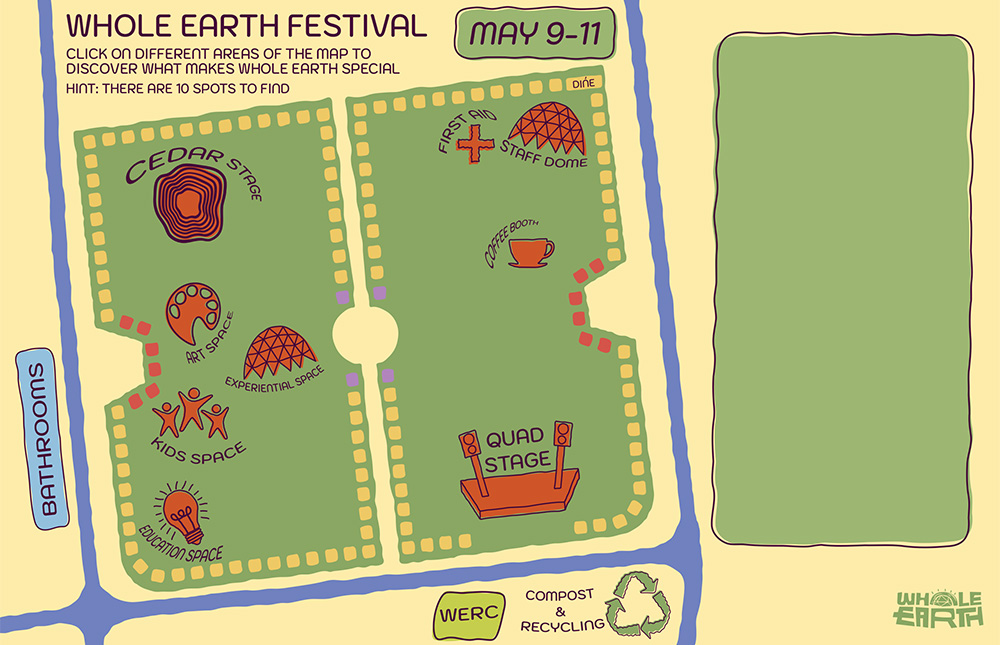

Nonviolence and Chaos Control
This festival wouldn’t be what it is without all of the awesome people that work tirelessly to make this event happen! All the hands that keep this festival moving attend a Nonviolence meeting.
One of the many things that make this festival special is the philosophy of nonviolence. We learn, practice, and use the art of active listening and respect to resolve disagreements in a manner that ends well for all parties. Whole Earth rejects the dominant mindset in American culture, that an end to contention results in a victor and vanquished. Nonviolent conflict resolution is a fun and useful practice to not only run a festival but also live life.
Love your Mother

It’s no coincidence that this festival is always held on mothers day weekend. Whole Earth is a celebration of the life that is given to us by our mothers; especially our Great Mother: Gaia or Mother Earth. Thank you Mother Earth for every leaf on every tree, for the setting and rising sun, for the blue of the sky and green of the grass, for every ripple in every water, every star among the moon, for every every creature small and big, and most of all thank you for the gift of being. Mothers, you are the catalyst of life, what would we do without you!
Complete Without Meat

Something unique about this event is that none of the food booths offer meat! A long time ago the festival staff decided that this event would be meat free, for the sake of you and I and the animals and the Whole Earth! Eating plant-based is the number one way an individual can reduce their individual impact on the environment, it’s also better for your health. Let’s skip the factory farms and eat plants!
Zero-Waste

At this festival we recycle, compost, or reuse everything we possibly can to achieve “Zero Waste”. With the help of our compost and recycling directors and their wonderful volunteers all disposed materials are hand sorted to see that they are properly recycled or composted. WERC or Whole Earth Reusable Cooperative aims at keeping the festival free of disposable single use dishes and utensils by providing reusable dishware. This reduces our contribution to landfills, saves forests, prevents land/air/water pollution, and saves on energy costs. Make sure you return your dishes to the dish return booths so they can be cleaned and used again and again!
Handmade is just better

We have around 130 craft booths lining the quad during the festival. When you're not dancing to the music or enjoying a vegan corn dog, take a walk around and check out all the vendors selling their handmade wares. There are a range of artisan products, tie-dye, ceramics, jewelry, natural fiber clothing, and so so so much more!
Music and Groove

We have 2 stages on the quad during the festival, Quad and Cedar stage. Both provide ample entertainment for festival goers throughout the day and into the night. Enjoy a range of musical performances, dance groups, and speakers, check out the schedules in the program to see the exact times.
Experiential and Education Spaces

The Whole Earth Festival is more than just skipping around and dancing. We also provide spaces to experience, educate, and grow. The experiential dome is an area where people can enjoy a range of events; yoga, open mics, meditation, chickens!, poetry, and so much more. Education has booths and speakers throughout the day. Check out environmental groups, identity based groups, and listen to professors speak.
Art Space
As a homage to how the festival first began, Art Space serves as an outdoor art gallery for community members to display their work and for festival goers to enjoy. With a variety of art mediums and installations, our gallery showcases beautiful and impressive art that revolves around our values and current theme. We are also offering art-making activities for festival goers to engage with, like screen printing and developing cyanotypes!
Kid's Space

Whole Earth is a family friendly event. We welcome students, parents, and children alike. Kid's space is a designated area for parents to bring their kids to play, do crafts, listen to readings, blow bubbles, and more. We encourage parents to stop by, but not to leave their kids unattendend.